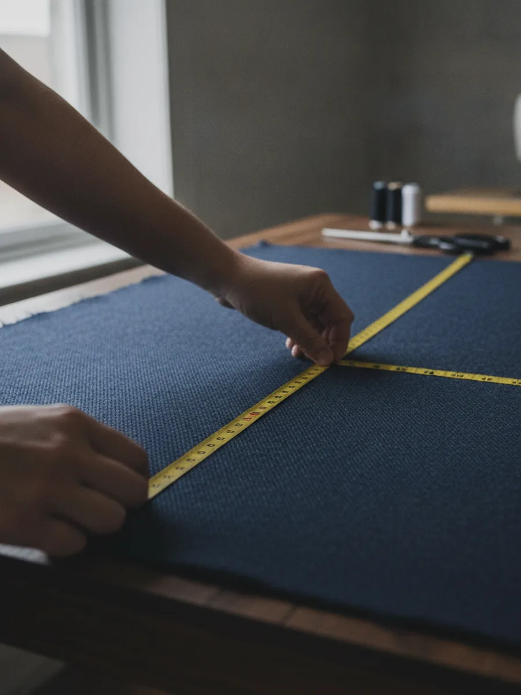

Hems & lengths
Pants, skirts, sleeves and dresses taken to the right length with a clean, original-looking finish.
Book thisOrem, UT · steps from BYU · tailoring since 1979
Forty-six years of hems, zippers, and jackets that finally fit. Now the good part: book your fitting online in about a minute, instead of playing phone tag with the shop.
New at the shop
No more calling three times to catch us between customers. Pick what you need, grab a time that works, and we'll have your ticket ready when you walk in. It's the easiest fitting you'll ever schedule.
What we fix
Four-plus decades of alterations means almost nothing surprises us. Swipe through the usual jobs — and if yours isn't listed, just ask when you book.
Pants, skirts, sleeves and dresses taken to the right length with a clean, original-looking finish.
Book thisNew zippers, split seams, buttons and tears fixed fast, so a favorite piece gets a second life.
Book thisJackets taken in, sleeves shortened, trousers tapered. A sharp, custom-tailored fit off the rack.
Book thisGowns, bridesmaids and tuxes fitted with the care a once-in-a-lifetime photo deserves.
Book thisHeavy hems, jacket adjustments and the fabrics most shops turn away. Bring us the hard ones.
Book thisEvery job priced when we see it · most turned around in a few days.

Since 1979
Eddie's has been tucked near University Parkway since 1979 — long enough to have hemmed the prom dresses, the mission suits, and the wedding gowns of about three generations of Orem and BYU families.
Two tiny tailors, one very well-worn tape measure, and a wall of thread. The reviews say the rest: 4.7 stars across 141 of them, earned one honest fitting at a time.
The work
A quick peek at the everyday jobs that come across the table.
Ready when you are
Reserve your fitting in about a minute, or call and we'll pick a time together. Either way, we'll be ready with the pins out.
Concept demo prepared for Eddie's Two Tiny Tailors — not affiliated, pending owner approval. Photos are AI illustrations.